last updated: 2023-02-09¶
AlmaLinux installation guide (ISOs)¶
These guide steps describe how to download AlmaLinux ISO, create a USB stick, and install AlmaLinux OS using it.
Requirements¶
- System requirements:
- Disk space: 10GB minimum, 20GB recommended
- Minimum 1.5 GB RAM
Tip
More about requirements: Red Hat Enterprise Linux Technology Capabilities and Limits.
- A USB flash drive of size 8GB as a minimum, 12GB or more recommended
Download AlmaLinux ISO¶
AlmaLinux supports both firmware interfaces: BIOS and UEFI.
AlmaLinux supports four architectures:
- Intel/AMD (x86_64)
- ARM64 (aarch64)
- IBM PowerPC (ppc64le)
- IBM Z (s390x)
AlmaLinux has 3 types of ISOs for each supported architecture:
boot- a single network installation CD image that downloads packages over the Internet.minimal- a minimal self-containing DVD image that makes offline installation possible.dvd- a full installation DVD image that contains mostly all AlmaLinux packages.
Tip
There are also latest and update ISO images. Latest provides the latest minor version of the selected major version, like AlmaLinux-9-latest. Update files are ISOs that were rebuilt including some updates.
There are a few ways to download AlmaLinux ISO:
- Download AlmaLinux ISO from the mirror. Select the nearest to your geographic area mirror from the list. You need the version/isos/arch/ directory to download the suitable ISO.
-
Download from the Public Package Repository:
- AlmaLinux 8
- AlmaLinux 9
- Lower and beta versions can be found in the Vault
-
Run the
curlcommand in the command line:
Warning
This command example is for downloading the DVD ISO of AlmaLinux 9.1. AlmaLinux ISOs are named using the following convention:
AlmaLinux-major version.minor version-architecture-ISO type.iso
Change the version, architecture and type to the ones you need.
Tip
curl is built-in into current versions of Linux, macOS and Windows.
ISO verification¶
Linux¶
Download and import the AlmaLinux public key:
$ curl -O https://repo.almalinux.org/almalinux/RPM-GPG-KEY-AlmaLinux-9
$ gpg --import RPM-GPG-KEY-AlmaLinux-9
Verify the downloaded ISO image checksum:
# download a checksums list
$ curl -O https://repo.almalinux.org/almalinux/9/isos/x86_64/CHECKSUM
# verify the checksums list, we are looking for a Good signature
$ gpg --verify CHECKSUM
gpg: Signature made Tue 13 Dec 2022 14:09:50 CET
gpg: using RSA key BF18AC2876178908D6E71267D36CB86CB86B3716
gpg: Good signature from "AlmaLinux OS 9 <packager@almalinux.org>" [unknown]
gpg: WARNING: This key is not certified with a trusted signature!
gpg: There is no indication that the signature belongs to the owner.
Primary key fingerprint: BF18 AC28 7617 8908 D6E7 1267 D36C B86C B86B 3716
# calculate the downloaded ISO SHA256 checksum
$ sha256sum AlmaLinux-9.1-x86_64-dvd.iso
2a44e3f8a012c132da19b9aae2bf949e20b116f0a2a7ac3eca111972f4ac952f AlmaLinux-9.1-x86_64-dvd.iso
# compare it with the expected checksum, it should be the same
$ cat CHECKSUM | grep -E 'SHA256.*AlmaLinux-9.1-x86_64-dvd.iso'
SHA256 (AlmaLinux-9.1-x86_64-dvd.iso) = 2a44e3f8a012c132da19b9aae2bf949e20b116f0a2a7ac3eca111972f4ac952f
macOS¶
# calculate the downloaded ISO SHA256 checksum
$ shasum -a 256 AlmaLinux-9.1-x86_64-dvd.iso
2a44e3f8a012c132da19b9aae2bf949e20b116f0a2a7ac3eca111972f4ac952f AlmaLinux-9.1-x86_64-dvd.iso
# download the CHECKSUM file
curl -O https://repo.almalinux.org/almalinux/9/isos/x86_64/CHECKSUM
# compare it with the expected checksum, it should be the same
$ cat CHECKSUM | grep -E 'SHA256.*AlmaLinux-9.1-x86_64-dvd.iso'
SHA256 (AlmaLinux-9.1-x86_64-dvd.iso) = 2a44e3f8a012c132da19b9aae2bf949e20b116f0a2a7ac3eca111972f4ac952f
Windows¶
C:\> certUtil -hashfile C:\AlmaLinux-9.1-x86_64-dvd.iso SHA256
SHA256 hash of AlmaLinux-9.1-x86_64-dvd.iso:
2a44e3f8a012c132da19b9aae2bf949e20b116f0a2a7ac3eca111972f4ac952f
CertUtil: -hashfile command completed successfully.
# download the CHECKSUM file
C:\> curl -O https://repo.almalinux.org/almalinux/9/isos/x86_64/CHECKSUM
# compare it with the expected checksum, it should be the same
C:\> findstr /i /r /c:"SHA256.*AlmaLinux-9.1-x86_64-dvd.iso" CHECKSUM
SHA256 (AlmaLinux-9.1-x86_64-dvd.iso) = 2a44e3f8a012c132da19b9aae2bf949e20b116f0a2a7ac3eca111972f4ac952f
Write an image on a USB¶
Use the following steps and commands depending on OS you are using to write an image on a USB.
Linux¶
Use the dd command for any Linux OS.
Insert your target USB and locate it. There are different ways to do it, but here are some of them:
-
sudo fdisk -l- this command shows you the connected block storage devices, including the USB devices. -
lsblk- this command gives you all the available block storage devices, including the USB block storage devices. -
sudo blkid- this command gives you the same information aslsblk, but you have to run it as root.
You need to look for /dev/sda or /dev/sdb or /dev/sdc, which is your target USB.
After you found out the location of your target USB, navigate to the location of your source ISO. Run the dd command to copy files from ISO to USB:
dd: Start the dd command to write the DVD/CD iso image.if=AlmaLinux-9.1-x86_64-dvd.iso: path to the input file.of=/dev/sdX: path to destination USB disk/stick (you need to replace 'X').status=progress: display a progress bar while writing the image to the USB stick.
Warning
This example is for AlmaLinux 9.1. Replace the version with the one you need to work with other AlmaLinux images.
Windows¶
For Windows OS there is a helpful free and open-source application - Rufus.
Open the application, choose your target USB, and ISO you need to burn, and press start.
macOS¶
The cross-platform tool balenaEtcher is used to write images on macOS. It is simple too. Open balenaEtcher, choose the image and the USB, and press Flash.
You can also use dd form CLI:
Tip
Look at the Linux example above for detailed command elements description for the dd command.
Tip
To determine the XXX (on our machine it was disk2s1) open the Disk Utility app. Choose your USB drive in the External section and check the disk name in the Device field:
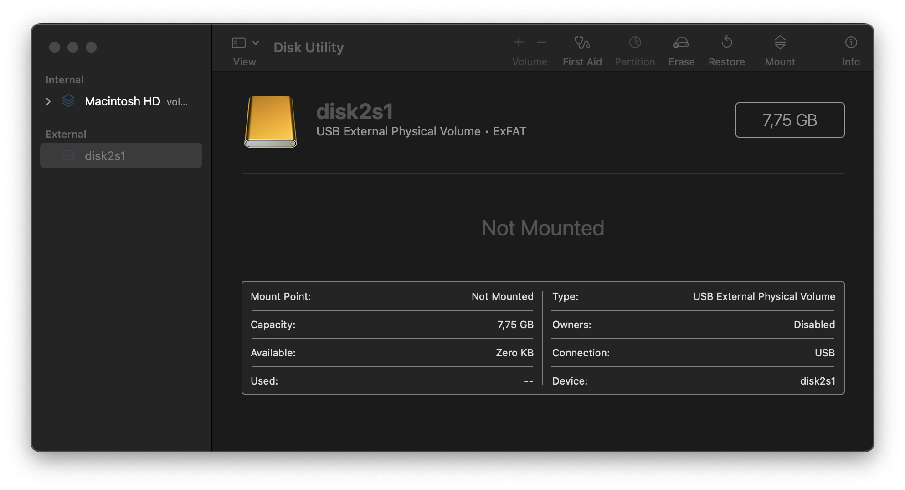
Now you have AlmaLinux ready on a USB stick.
Installation¶
- Before starting the installation, you might need to define which system's mode you are booting and installing - UEFI or BIOS.
- Insert and boot the USB stick. You'll see the AlmaLinux welcome menu:
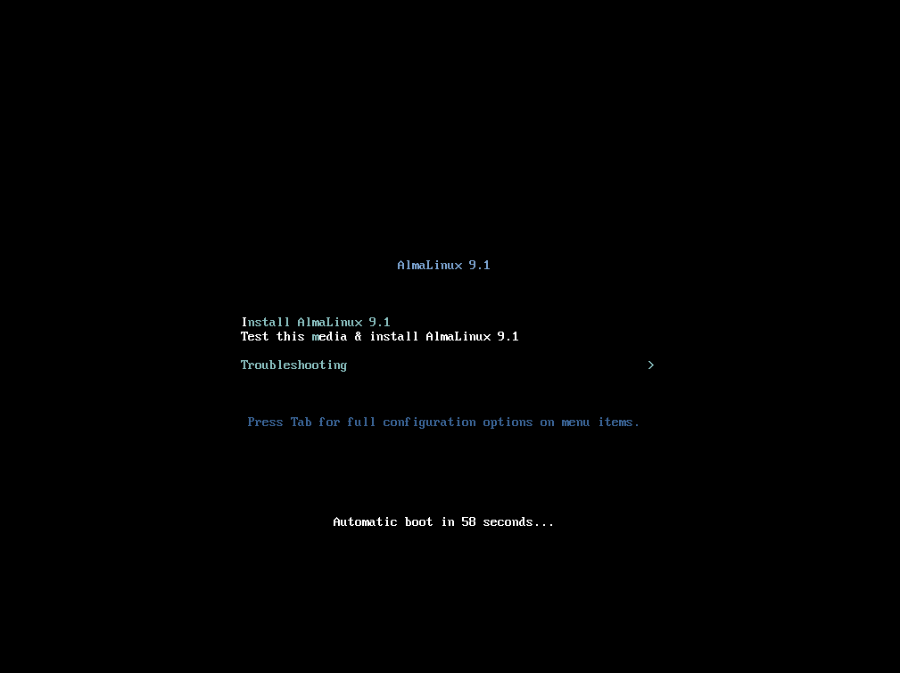
- Automatically, the recommended option Test this media & install AlmaLinux 9.1 is highlighted. Choosing this option will run the installation media check to verify that it's usable and that the installation won't be aborted in the process. After the media check completes successfully, the installer screen will pop up automatically.
Tip
You can choose the first option Install AlmaLinux 9.1. In this case, you will only see some boot messages before the installer will pop up. The installation media check won't be performed.
- When the installer boots, the first thing you need to do, is to choose a language that will be used during the installation process.
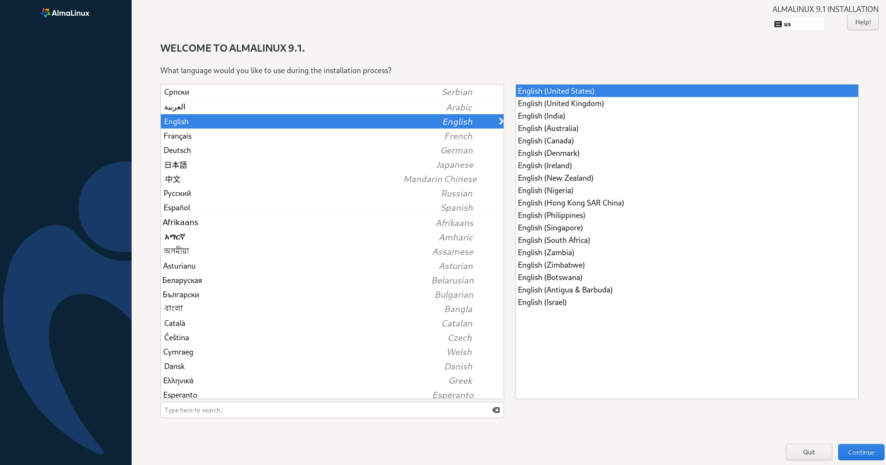 Choose the language you'd like and press the Continue button.
- Next, the Installation Summary window will appear. It contains sections that you can configure:
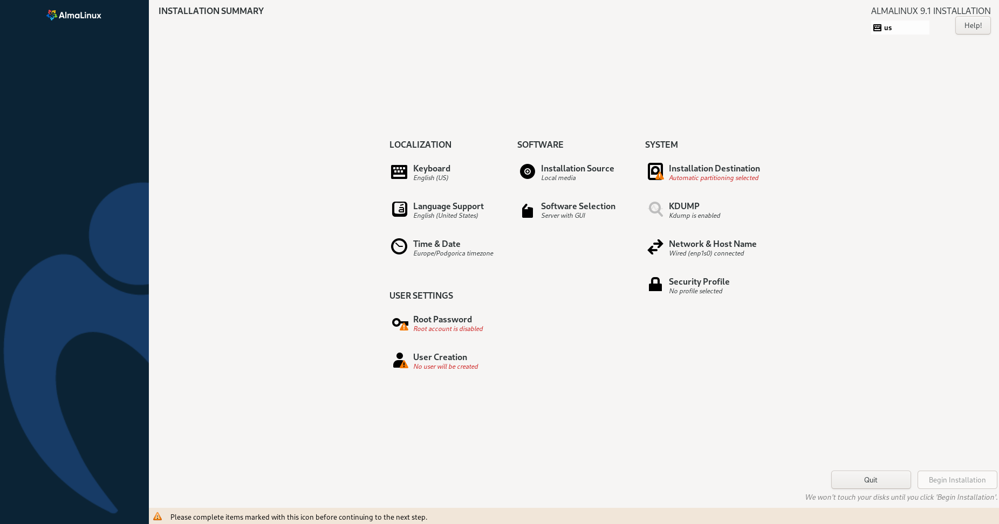
Warning
Sections that are marked with red color are necessary to be customized to begin the installation.
-
LOCALIZATION section:
- Keyboard - you may choose and specify the system's keyboard layouts here. By default, there are an English layout and a language chosen during the previous step.

When you've finished with the changes, click on the Done button.
- Language Support - the default supported language is the language you chose for the installation process. You can add support for additional languages if you need it.
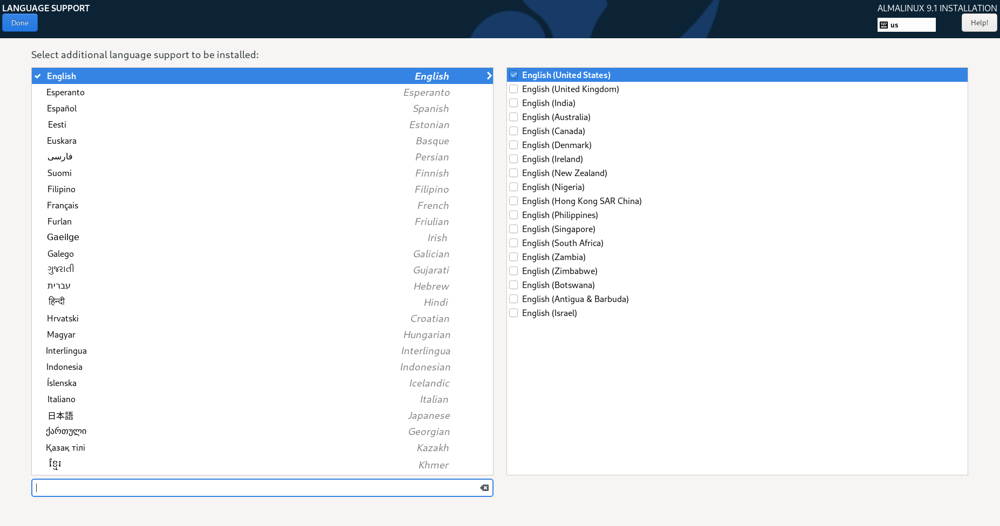
When you've finished with the changes, click on the Done button.
- Time & Date - this option allows you to select the timezone you need for your machine. You can choose the location from the Region/City lists or select if from the map. There is the Network Time option that allows the system to automatically set the time when this option is enabled. This option can be set to ON or OFF by default. It depends on your installation source.

When you've finished with the changes, click on the Done button.
-
SOFTWARE - this section allows you to add the installation source and additional repositories if needed.
- Installation Source - the installation source is to be specified here. When using an ISO image for the installation using, the installation source will be automatically specified as Local media.
Warning
If you are using the BOOT ISO image to perform the installation, you will need to provide the <version>/BaseOS/x86_64/kickstart/ repository from the selected mirror as the Installation Source if the installer will not be able to find the closest mirror for some reason.
There are no extra Installation Sources required if you decided to go with either the minimal or DVD ISO images.
When you've finished with the changes, click on the Done button.
-
Software Selection - this section contains two fields:
- Base Environment - this field will be defined automatically according to the ISO type you are using for the installation.
- Additional Software for the Selected Environment - you can choose additional software to be installed. The list of available additional software depends on the chosen variant in the Base Environment field.
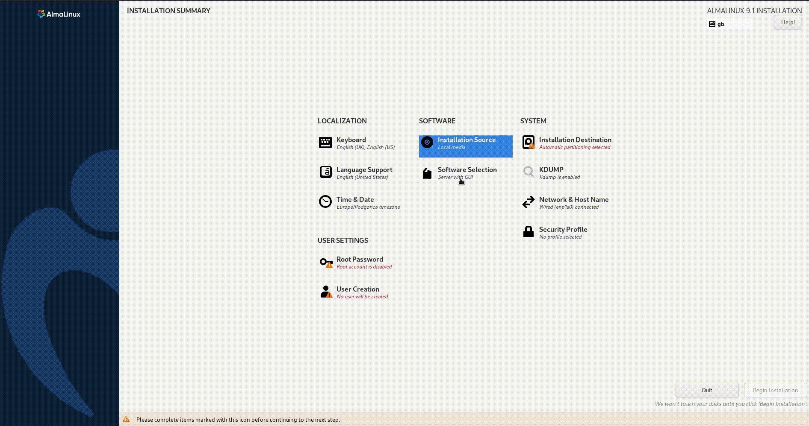
When you've finished with the changes, click on the Done button.
- SYSTEM - this section allows you to customize the hardware of the system to you your needs like creating drive partitions, enabling Encryption, KDUMP, specifying the Network and choosing a security profile:
- Installation destination - you will see available disks for the system installation as Local Standard Disks. You can click on the disk you need. If your system has only one disk, it'll be automatically chosen. By default, Storage Configuration will be marked as Automatic.
Tip
If you want to create disk partitions by yourself, choose the Custom option here.
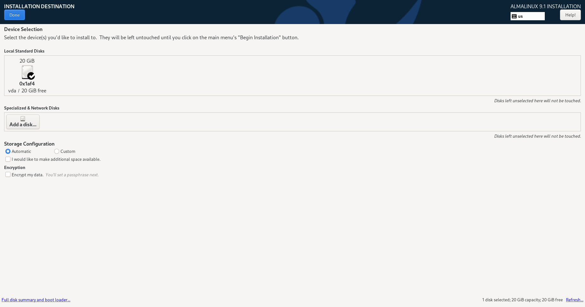
Tip
If you want to encrypt your data, select this option in the Encryption section. You'll be asked to type a passphrase after clicking on the Done button.
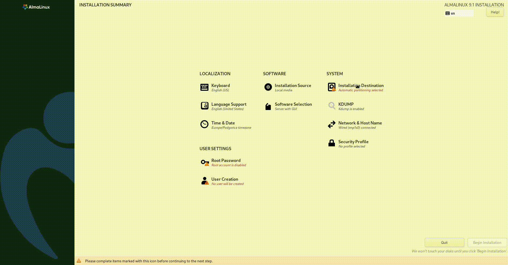
When you've finished with the changes, click on the Done button.
- KDUMP - by default, kdump will be marked as enabled with automatic memory reservation.
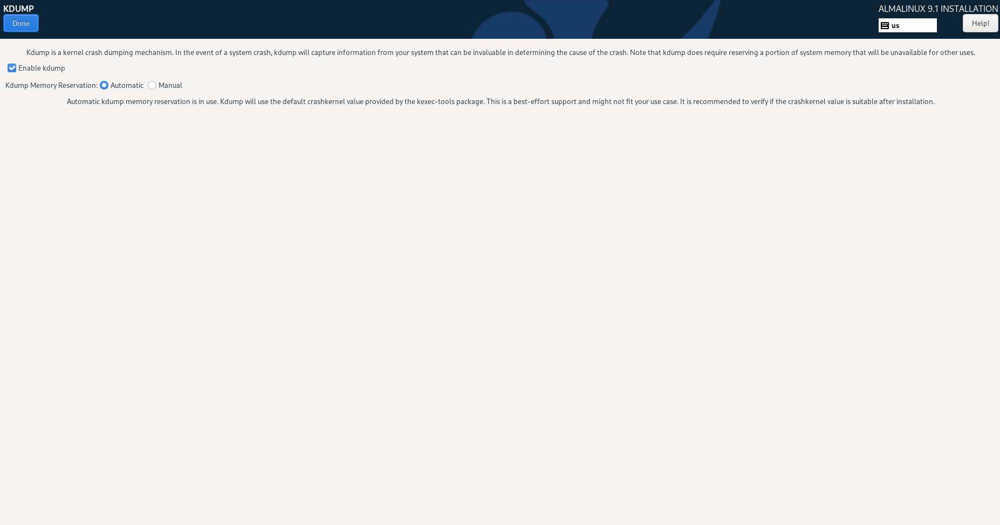
When you've finished with the changes, click on the Done button.
- Network & Host Name - all correctly detected networks will be listed in the left field. It'll be also automatically connected. You can add a network device and configure the chosen network in this section.
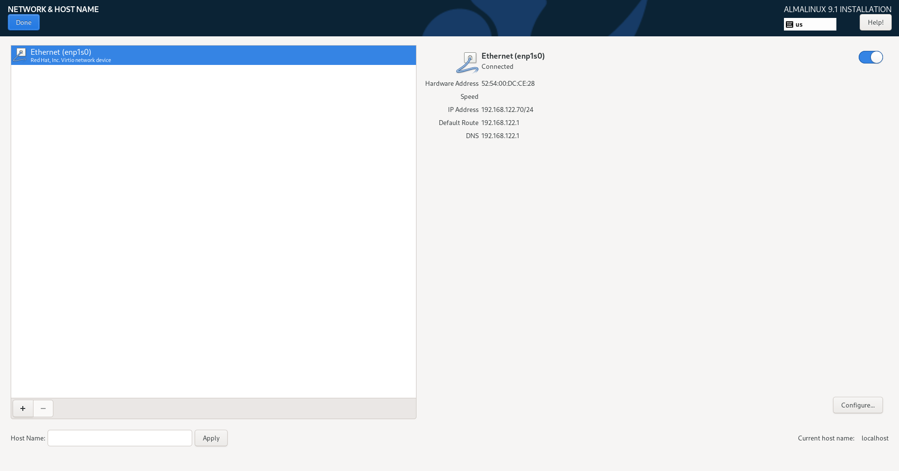
When you've finished with the changes, click on the Done button.
-
Security Profile - no profile is chosen by default, as applying a security policy is not necessary. The applied security policy will be installed in the system using the compliance policies defined by SCAP. You can choose one of the available security profiles:
- ANSSI-BP-028 (enhanced)
- ANSSI-BP-028 (high)
- ANSSI-BP-028 (intermediary)
- ANSSI-BP-028 (minimal)
- [DRAFT] CIS AlmaLinux 9 Benchmark for Level 2 - Server
- [DRAFT] CIS AlmaLinux 9 Benchmark for Level 1 - Server
- [DRAFT] CIS AlmaLinux 9 Benchmark for Level 1 - Workstation
- [DRAFT] CIS AlmaLinux 9 Benchmark for Level 2 - Workstation
- [DRAFT] Unclassified Information in Non-federal Information Systems and Organizations (NIST 800-171)
- Australian Cyber Security Centre (ACSC) Essential Eight
- Health Insurance Portability and Accountability Act (HIPAA)
- Australian Cyber Security Centre (ACSC) ISM Official
- [DRAFT] Protection Profile for General Purpose Operating Systems
- PCI-DSS v3.2.1 Control Baseline for Red Hat Enterprise Linux 9
- [DRAFT] DISA STIG for Red Hat Enterprise Linux 9
- [DRAFT] DISA STIG with GUI for Red Hat Enterprise Linux 9

Tip
If you are interested in more details about Security Profiles, check the OpenSCAP Guide for AlmaLinux 8 and OpenSCAP Guide for AlmaLinux 9.
When you've finished with the changes, click on the Done button.
- USER SETTINGS - in this section, you are able to create a password for the root user account and create user accounts.
- Root Password - as the root user is the most privileged account, you must set a strong password for it to protect this account. Type the password in the Root Password text field and type it once more in the Confirm text field to confirm the password.
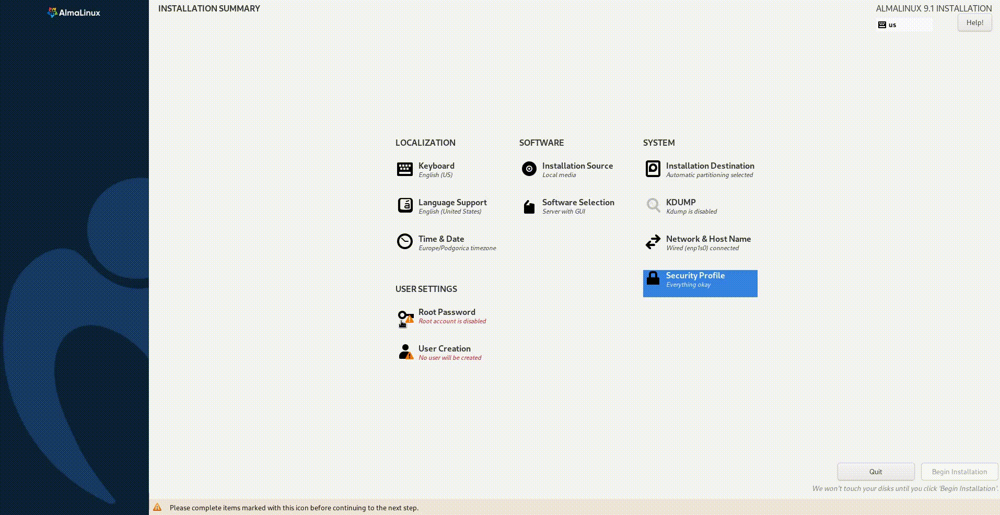
When you've finished with the changes, click on the Done button.
- User Creation - this window allows you to create administrative and non-administrative users. To create a user fill in the Full Name and User Name fields, set and confirm the password, and enable the Make this user administrator field if needed. The Require the password to use this account option is enabled by default. You can leave it enabled or click on the checkbox to remove the check to disable this option.
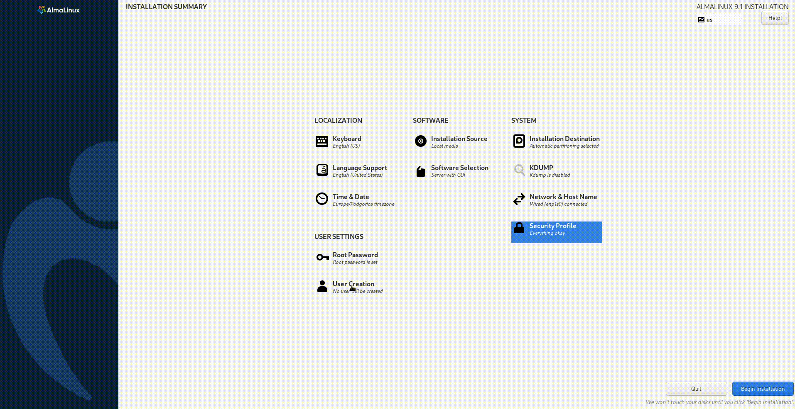
When you've finished with the changes, click on the Done button.
- When you are finished with the customization, click on the Begin Installation button to start the installation process.
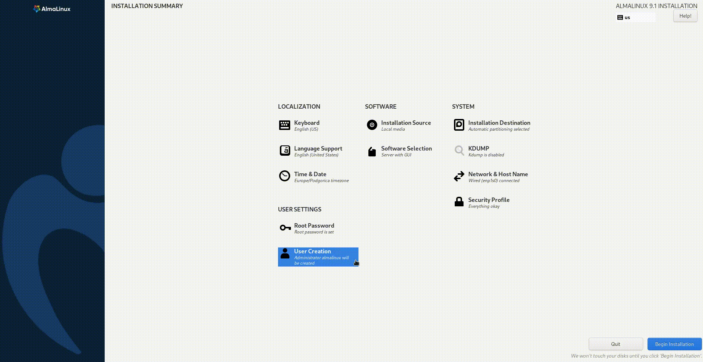
You will see the process running and its progress. Also, different task messages will appear.
Tip
If you don't want to proceed, you can safely quit the process by pressing the Quit button or resetting the machine.
- Wait for the installation process to complete successfully and click on the Reboot button to restart the system.
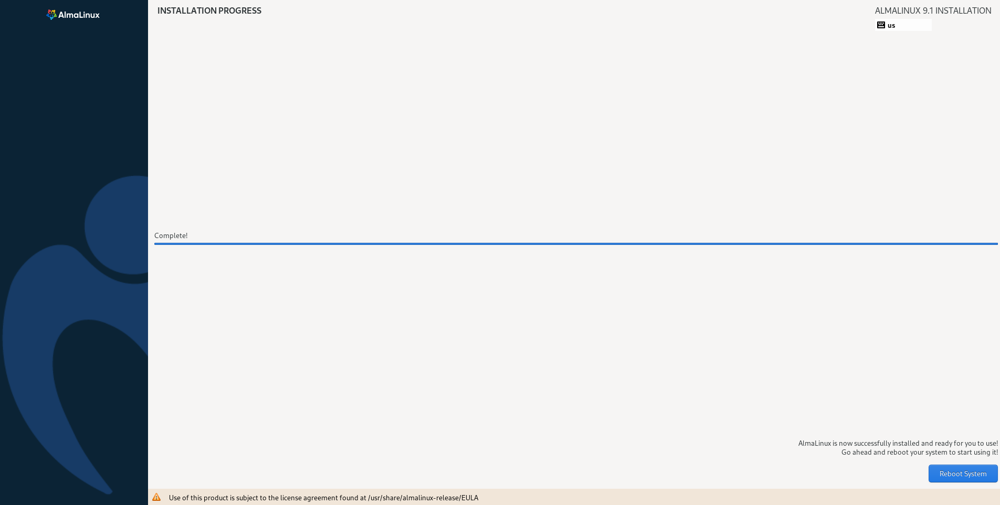
- When the system reboots, log in and enjoy your AlmaLinux system.
Live Media¶
AlmaLinux also provides Live Media images with different desktop environment options:
- GNOME-Mini
- GNOME
- KDE
- XFCE
- MATE
Using Live Media You can try AlmaLinux OS before installing. You can find more information on the Live Media wiki page.
Trademark
Red Hat, Red Hat Enterprise Linux are trademarks or registered trademarks of Red Hat, Inc. or its subsidiaries in the United States and other countries.
Linux is the registered trademark of Linus Torvalds in the U.S. and other countries.
macOS is the registered trademark of Apple Inc. in the U.S. and other countries.
Windows is the registered trademark of Microsoft Corporation in the United States and other countries.